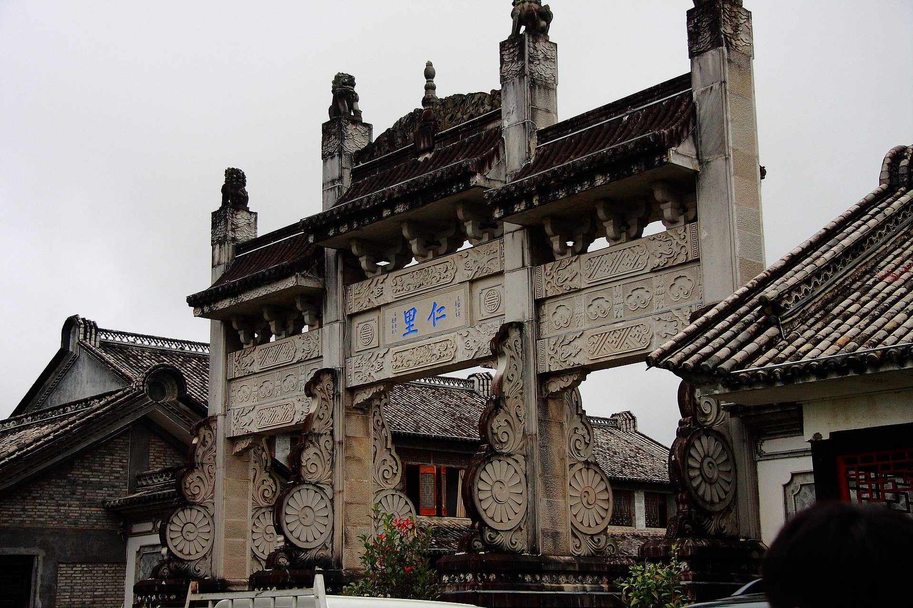
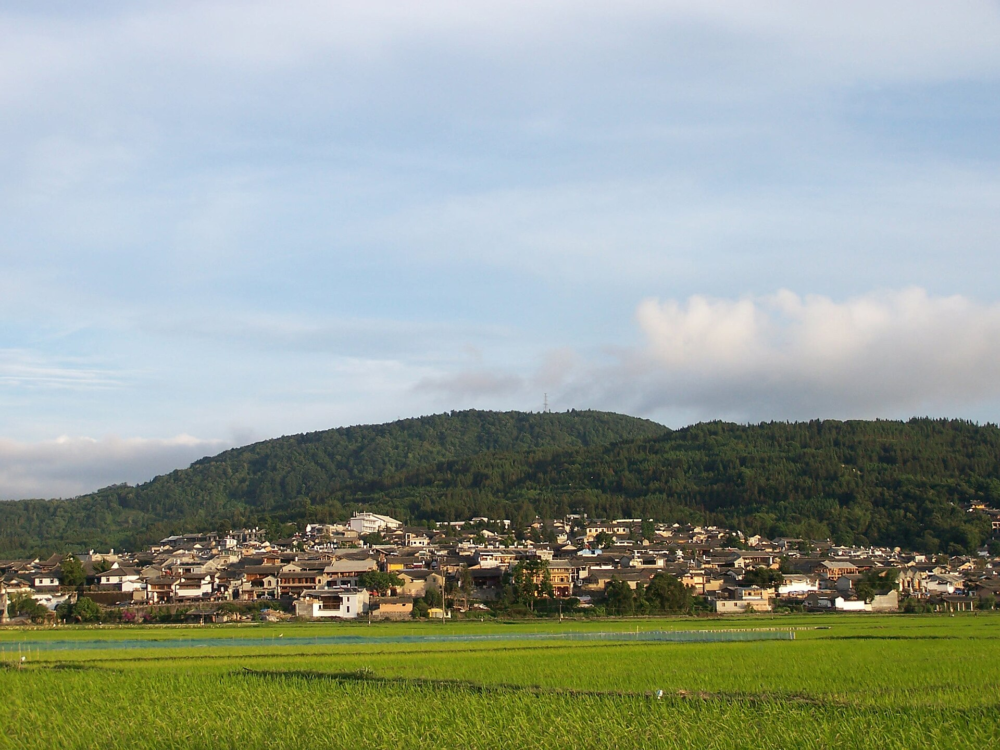
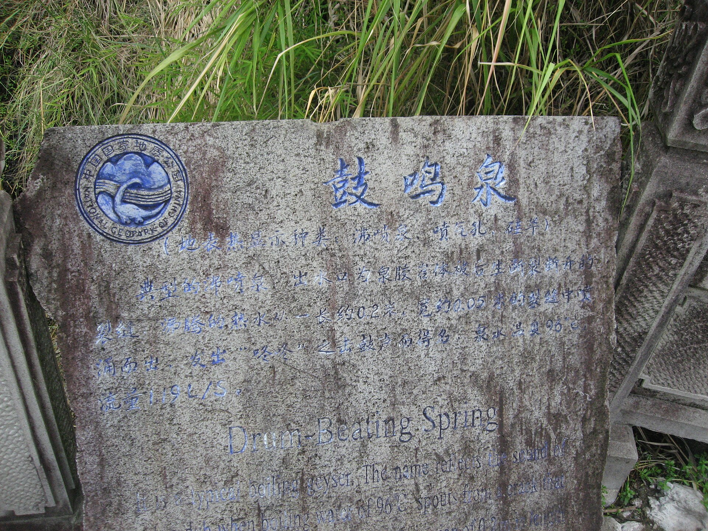
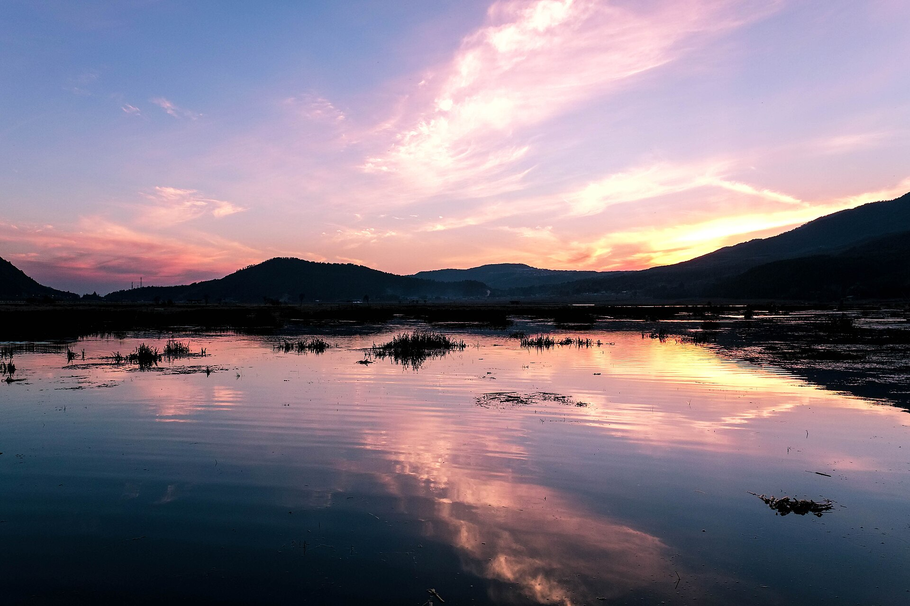
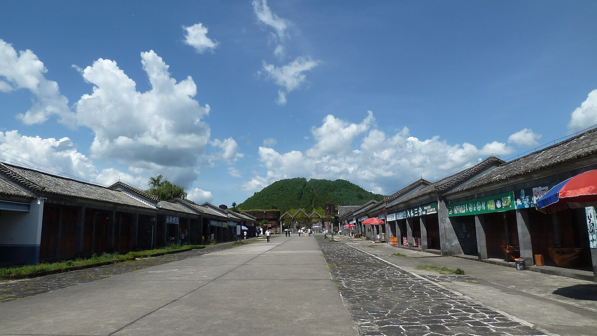
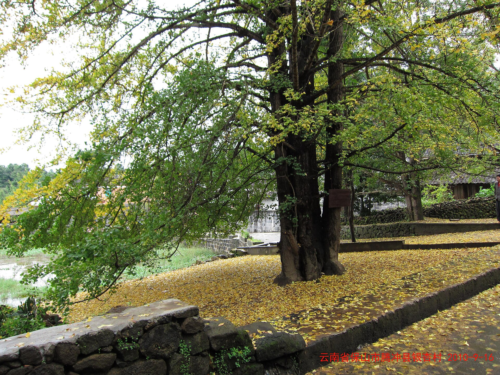

和顺古镇（本次基地）
600 年侨乡古镇，比大理丽江安静一个量级：图书馆、宗祠、洗衣亭、野鸭湖，全程住镇上，出门就是风景。

和顺 + 温泉 · 6 天 5 晚
妈妈 + 女儿 + 儿子 · 10.1—10.6 · 古镇民宿 + 温泉度假，景点全是半日轻量款，人比大理少一个量级
亮点速览

600 年侨乡古镇，比大理丽江安静一个量级：图书馆、宗祠、洗衣亭、野鸭湖，全程住镇上，出门就是风景。

96℃ 的大滚锅蒸汽扑面，看完直接下池子泡。硫磺泉对关节好，妈妈辈普遍买账——这是腾冲的灵魂项目。

上午火山公园爬 200 级台阶看火山口，或北海湿地划草排；都是半天来回的轻量项目，下午雷打不动回古镇午休。
大交通
行程速览
| 日期 | 上午 | 下午 | 晚上 |
|---|---|---|---|
| D1（10/1） | 飞抵腾冲，接站到和顺 | 古镇随意逛、野鸭湖 | 古镇晚餐，早点休息 |
| D2（10/2） | 国殇墓园 + 滇西抗战纪念馆 | 和顺图书馆、宗祠、洗衣亭 | 古镇咖啡馆，早回民宿 |
| D3（10/3） | 火山地质公园 | 热海大滚锅 + 泡温泉 | 回古镇，晚餐后散步 |
| D4（10/4） | 北海湿地划草排 | 民宿午休 / 温泉酒店泡汤 | 和顺小巷夜景 |
| D5（10/5） | 云峰山 或 古镇深度慢游 | 留白：喝茶 / 做 SPA / 补买手信 | 古镇收官晚餐 |
| D6（10/6） | 早班机返程 | — | — |
每日详细安排

住宿（本次重点）
全程住和顺古镇内的老宅民宿最省心（出门就是古镇）；预算充足可以 D4 那晚换到温泉酒店，体验「房间里放温泉水」的度假感。两种都是高住宿要求的正解。
美食清单


必吃：大救驾（炒饵块，名字来自救过永历帝的典故）、土锅子（腾冲版火锅，炭火土陶锅）、腾冲饵丝、稀豆粉配粑粑、铜瓢牛肉、棕包炒肉、银杏炖鸡；松花糕、酸木瓜水当零嘴。
找店：和顺古镇主街游客价，往十字路外圈的本地人馆子走；民宿老板推荐的土锅子最稳，土锅子要提前 2—3 小时预订（现码现炖）。三人点一个小锅土锅子 + 两个炒菜刚好。
国庆特别提示
腾冲银杏村（固东江东村）金黄期是 11 月中下旬—12 月初，10 月初叶子还是绿的，专程跑一趟不值。想看「银杏雨」，把腾冲留给 11 月；这趟就安心古镇+温泉。
弹性备选